Integrated Manufacturing Process Pre-processor (MO) has Pre, Simulation and Post modes in one window. Pre mode GUI layout (See Fig. 6.1.1.) is mainly divided into Object tree, Graphics window, Property editor, Operation Editor and Explorer and Operation Manager regions.
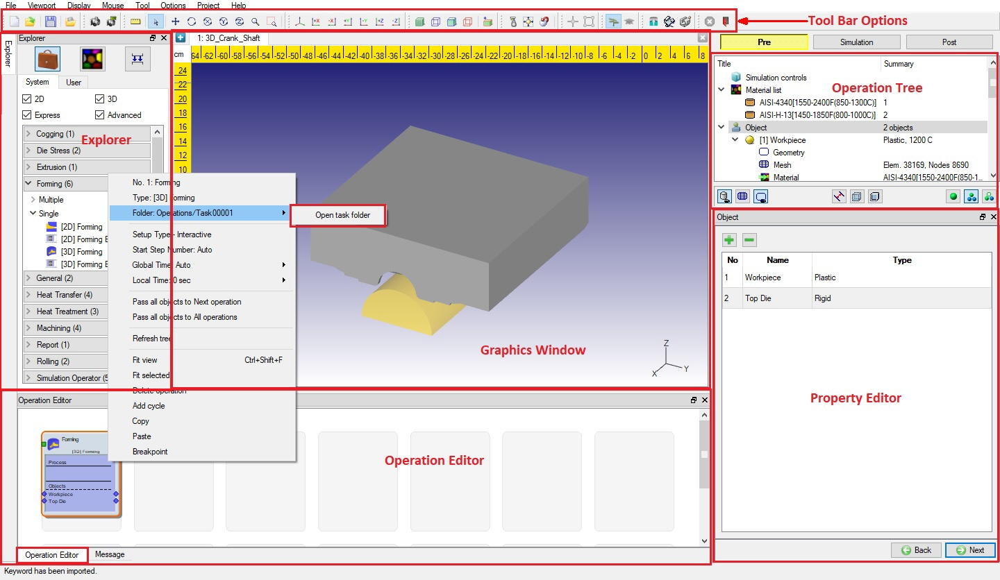
Explorer tab displays list of different templates/modules, DEFORM material library and Press movement library in MO environment.
User can navigate through Operation Tree and Property Editor to setup problem.
Graphics window will display graphical representation of objects. The graphic tab can be used for displaying the geometry and mesh information of the simulation objects.
Operation Editor will provide the space to edit and organize the sequence of multiple operations.
Message tab will display the information or errors related to the setup.
Preprocessor data can be changed at any of the simulated step by using the Step Editor.
Operation Manager list operations, objects, material, equipment's used in the project.
Explorer is having the list of available Operations, Material library and Press library.
Operations explorer lists different operations available in MO. The list of operations available in MO are,
Multiple
2D Forming
3D Forming
Note:
General pre is converted into Forming operation and Forming operations are converted into Forming express in MO.
Operations can be added in sequence of manufacturing process by clicking the  button next to the operations name or by dragging and dropping into the operation editor region or by
double clicking the operation in the operation explorer (See Fig. 6.1.2.). Depending on requirement of setup, user can filter the operations
for easy selection based on 2D, 3D, Express and Advanced modules. Also we can load the saved Template under User tab.
button next to the operations name or by dragging and dropping into the operation editor region or by
double clicking the operation in the operation explorer (See Fig. 6.1.2.). Depending on requirement of setup, user can filter the operations
for easy selection based on 2D, 3D, Express and Advanced modules. Also we can load the saved Template under User tab.
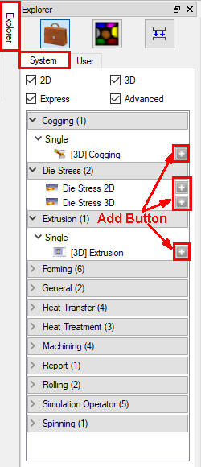
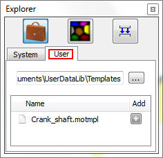
Operations Explorer tab; (a) System (b) User
Material Explorer provides access to DEFORM material library. Material library has different categories like Aluminum, Steel, Stainless, Super alloys, Titanium, Die material, Tool material etc. Depending on requirement of setup, user can filter
materials selection based on Cold Forming, Hot Forming, Heat treatment and Machining. User can create new material or modify the material properties and save them into user library depending on category, these can be accessed from the material explorer
user tab (See Fig. 6.1.3.).
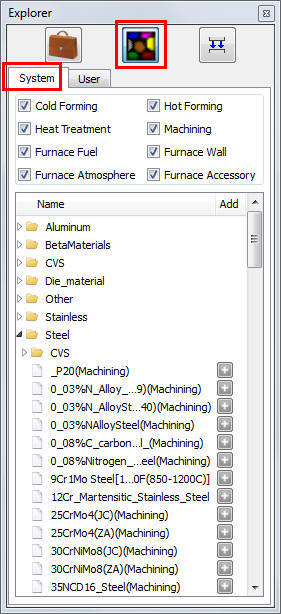
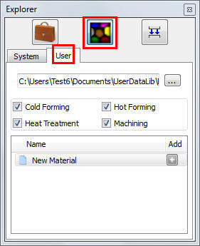
(a) (b)
Material Explorer tab; (a) System (b) User
Equipment Explorer provides access to Hammer, Mechanical and Screw press equipment data required for simulation for few standard equipment's standard operating loads as per the industry standards. User can create new equipment or modify existing equipment movement data and store in user library, the user library can be accessed through the user tab (See Fig. 6.1.4.).
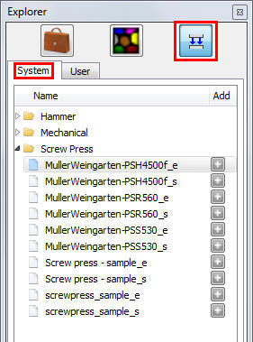
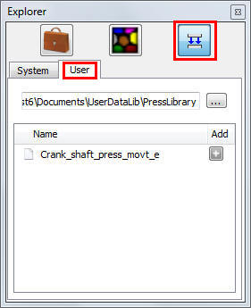
(a) (b)
Equipment Explorer tab; (a) System (b) User
Operation editor (See Fig. 6.1.5.) is the region where the operations can be added, deleted, selected for editing and arrange sequence of operations. Operations can be reordered by dragging them in the operation editor. Options are provided to transfer required object data across operations.
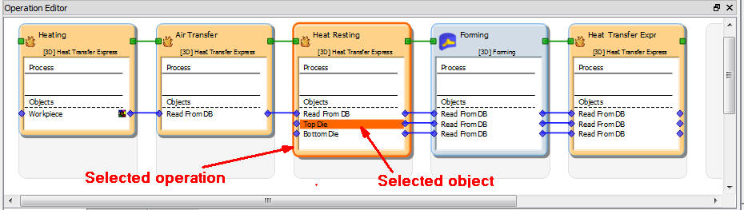
Operation Editor
User needs to setup the operations sequentially as displaying in the operation editor by using operation tree or property editor. After the setup user can edit any operations properties by selecting the particular operation from the operation editor, selection will highlight the operation by orange outline as shown in Fig. 6.1.5.
In Operation Editor right mouse button click will provide options as listed below. (See Fig. 6.1.6.)
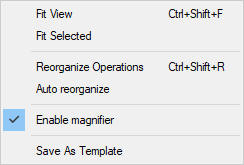
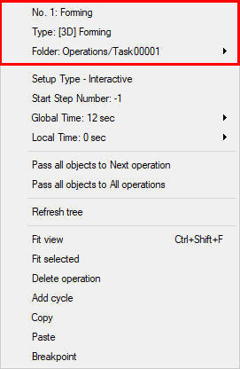
(a) (b)
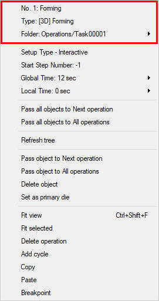
Operation editor options; (a) General options (b) Operation options and (c) Object options
Fit View: Fit the view of the Operations in operation editor. (See Fig. 6.1.7.)
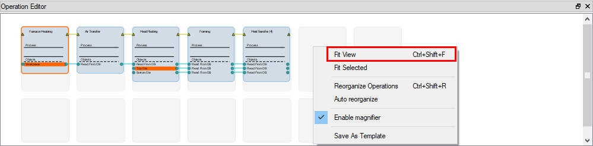
(a)
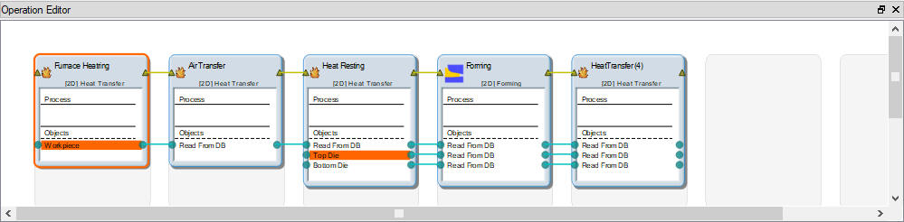
(b)
Fit view; (a) Before view fit (b) After view fit
Fit Selected: Fit the view of the selected operation in operation editor. (See Fig. 6.1.8)
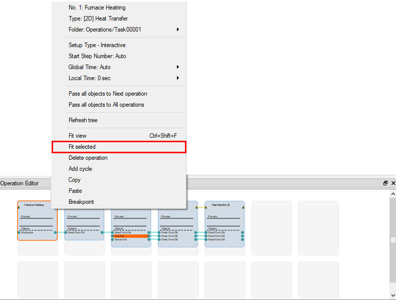
(a)
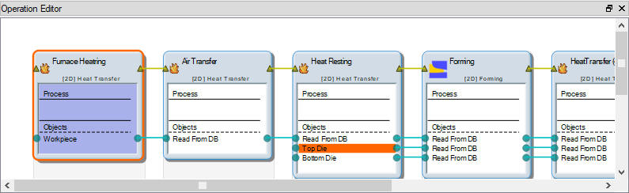
(b)
Fit selected operation view; (a) Before view fit (b) After view fit
Enable magnifier: Simply keeping the cursor on the operation editor region will magnify that region (See Fig. 6.1.9). By default this magnifier is disabled, this can be disabled by unchecking
check box.
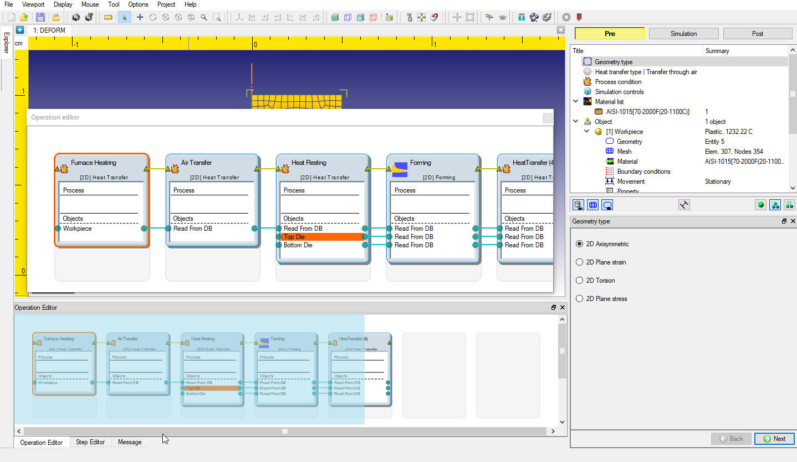
Delete Operation: Deletes the selected operation from the MO Project (See Fig. 6.1.10). Delete option available in the operations RMB options also.
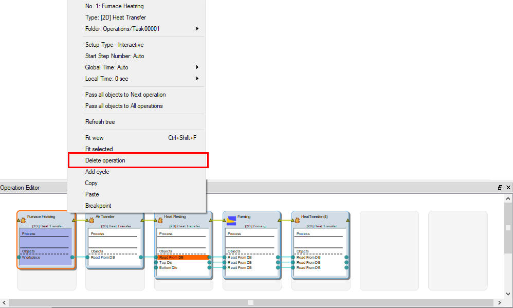
Delete operation option
Add cycle: This is used to perform same operations repetitively in cycle. User needs to select the operations to repeat and the number of times to repeat (See Fig. 6.1.11).To add
cycle to operation, the first operation in cycle must have read from DB object. To analyze the die stress and temperatures after the multiple components manufacturing is an example where user can use the add number of cycles as components produced.
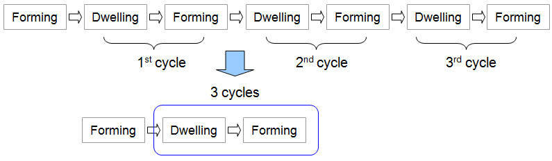
Extent to use the add cycles
For more details on add cycles refer the chapter 6.6.5. Adding Cycles.
Copy/Paste operation: Copy/Paste operation option can be used to eliminate the duplicated input effort to speed up the problem preparation.
To do Copy/pasting operation:
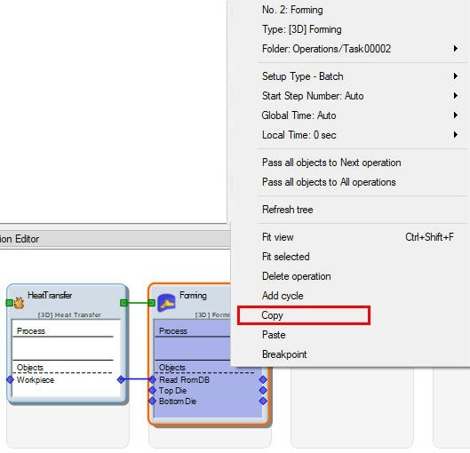
(a) Select copy option to copy the selected operation/s
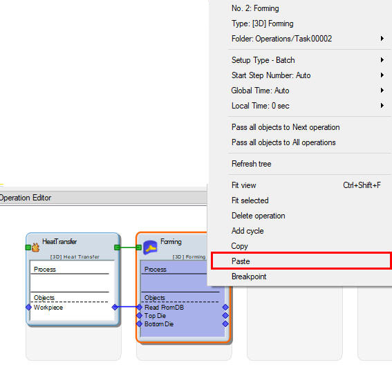
(b) Select paste to paste the copied operation/s
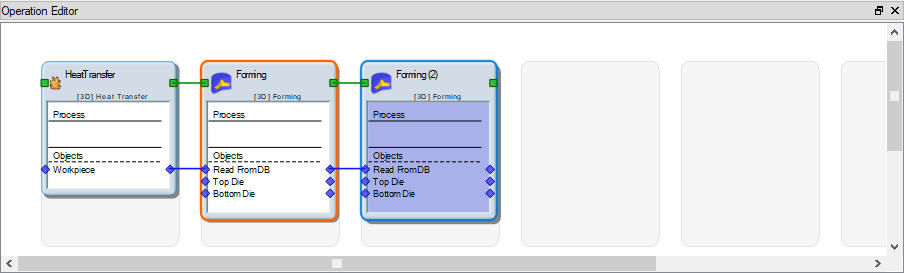
(c) copied operations added in operation list.
Copy/Paste operation
Breakpoint : Using Breakpoint option user can add Breakpoint to stop the simulation before the selected operation by selecting Breakpoint option as shown in Fig. 6.1.13.This will help the user to view simulation behaviour until that operation before proceeding with other operations
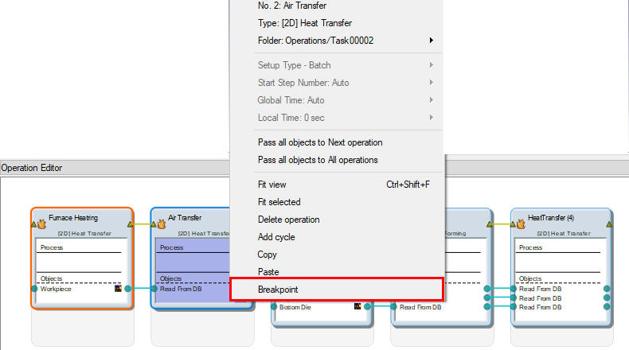
(a) adding Breakpoint operation using before this operation option
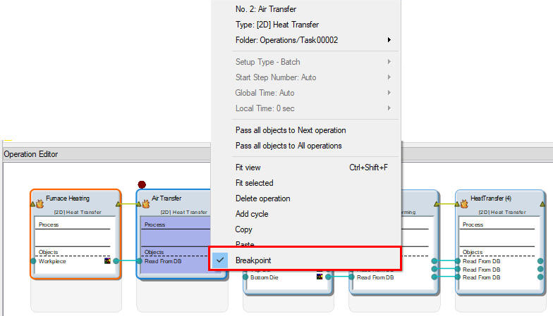
Delete Breakpoint: Added Breakpoint operation can be deleted by unchecking the Breakpoint check box.
No. 1: Display’s the operation number.
Type: Display’s the type of the selected Operation.
Folder (Open task folder): Using this option user can open the selected operation task folder which consists files related to the selected operation (See Fig. 6.1.14.).
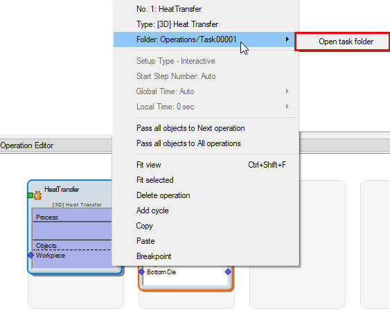
Operation Editor options
Pass Object To Next Operation: Using this option object data can be transferred to the next operation. (See Fig. 6.1.15.)
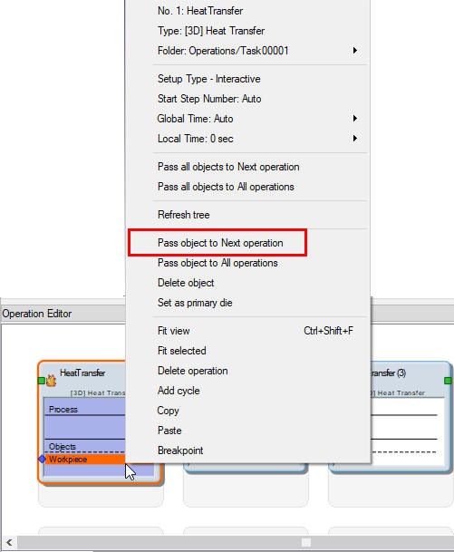
(a)
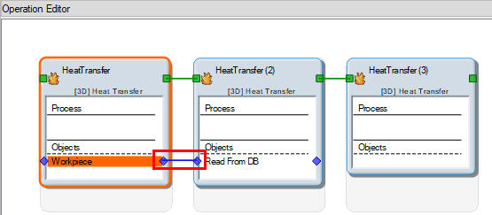
(b)
Pass object to next operation option; (a) Before passing and (b) After passing
Pass Object To All Operations: Using this option object data can be transferred to all operations. (See Fig. 6.1.16.)
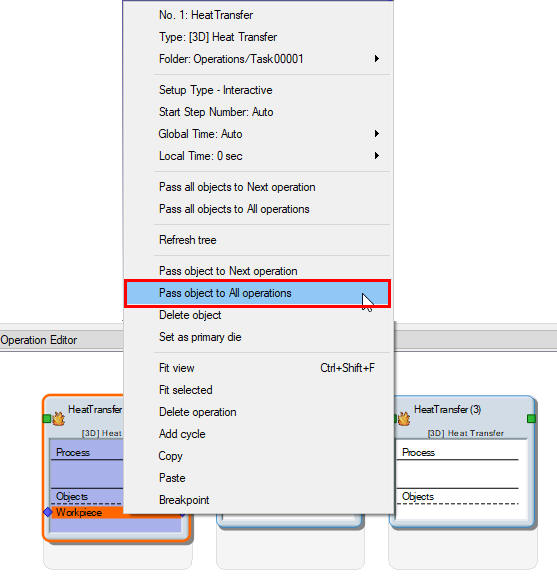
(a)
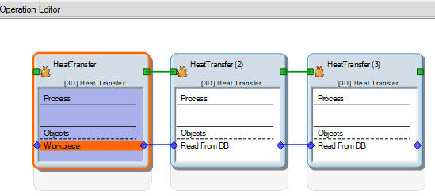
Pass object to all operation option; (a) Before passing and (b) After passing
Pass All objects to Next operation : Using this option All objects and their data can be transferred to the next operation.
Pass All objects to All operations : Using this option All objects and their data can be transferred to all operations.
Delete Object: Using this option user can delete the selected object in any particular operation. (See Fig. 6.1.17.)
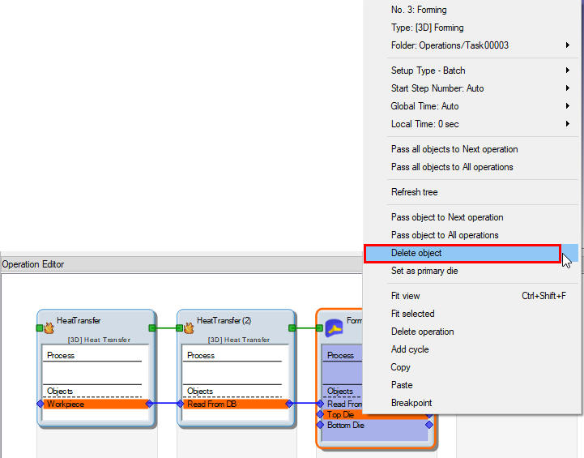
For more details on connecting operations and passing objects across operation refer the 6.1.1. Connecting Operations.
Set As Primary Die: Using this user can set object as Primary die.
After setting the object as primary die, user can see an arrow mark before the object name in operation editor for particular operation as shown in Fig. 6.1.18.
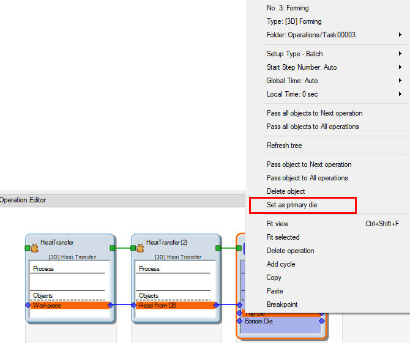
Set as primary Die
The purpose of this tree is to provide the user with a systematic list of required data for a given simulation. The data in the list is edited in the setting modification window. The data that is being edited is controlled by the current active position within the operation tree. The structure of the program will progress directly down this list by clicking next in Property Editor region. Alternatively, if any data needs to be modified, clicking on given item in the list will allow that item to be edited in the property editor region.
Operation tree (See Fig. 6.1.19.) contains list of required data like geometry, mesh, boundary conditions, movement controls of an object, process type and simulation controls etc. The tool bar below the object tree is used to switch on or off the object, geometry, mesh and contacts display.
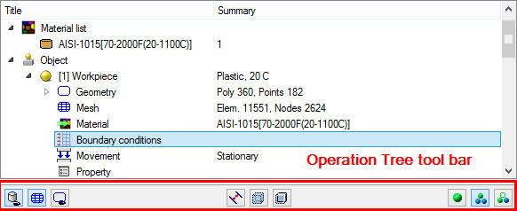
Operation Tree
Operation Tree Tool bar options
[2D][3D]:
Show Object: Turns on/off the selected object from object tree.
Show Mesh: Shows or hides mesh of the selected object from object tree.
Show Geometry: Shows or hides geometry of the selected object geometry from the object tree.
Show Contact Nodes: Turns on the contact display for the selected object from object tree with all other all object. (See Fig. 6.1.21.)
Turns on the contact display for the selected object from object tree with all other all object. (See Fig. 6.1.21.)
[3D]:
Make Transparent: Turns on/off transparency of the selected object from the object tree.
Show Backface: Turns on/off the back surface of the object selected object from the object tree, it will be more useful when the object are made transparent. (See Fig. 6.1.20.)
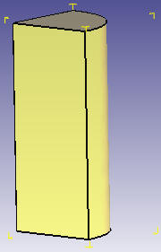
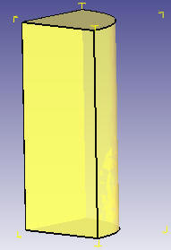
(a) (b)
Plastic object mesh in shaded rendering type; (a) With Back face on (b) With Back face off
[2D][3D]:
Object Display Modes: DEFORM has 3 different object display modes as shown in Fig. 6.1.19.
Single Object mode : Only the selected object from object tree is displayed. All other objects are hidden.
Multi Object mode : All objects are displayed in graphics window. The selected object from object tree is displayed in solid color and all other objects are transparent in
3d mode. (See Fig. 6.1.21.)
: All objects are displayed in graphics window. The selected object from object tree is displayed in solid color and all other objects are transparent in
3d mode. (See Fig. 6.1.21.)
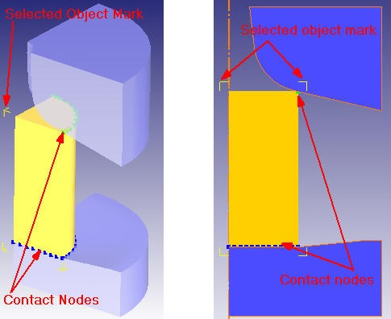
Multi object mode when plastic workpiece object get selected
User Object mode: User can toggle the object's Display, Geometry, Mesh, Transparency (only for 3D), Slice plane (only for 3D) modes independently.
This can be done by checking and unchecking respective check boxes as shown in Fig. 6.1.22.
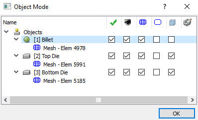
User defined Object Mode window
Following are the settings we have to select based on the objects display requirements,
Apply Display options: Applies the selected display option for the objects.
Visible: Turns on/off the selected object display.
Mesh: Shows or hides display of the selected object mesh.
Geometry : Shows or hides display of the selected object geometry.
: Shows or hides display of the selected object geometry.
Transparency: Turns on/off transparency of the selected object.
Slice : Turns on/off sliced plane for the selected sliced object.
: Turns on/off sliced plane for the selected sliced object.
Object Tree Right Mouse button (RMB) options
By using the RMB on Object or its Geometry branches in object tree user will get few options to export the geometry or control the object display.
By RMB click on the Object any particular object branch () user can export the geometry, turn on the contact nodes display, make the 3d objects transparent and turn on the 3d objects back face display as shown in Fig. 6.1.23. below. Geometry inside mark for 2d and Geometry normal vectors for 3d display can be activated by RMB option on (Geometry branch) as shown in Fig. 6.1.24. For more details on Enable contact nodes and Show backface options refer operation tree tool bar options.
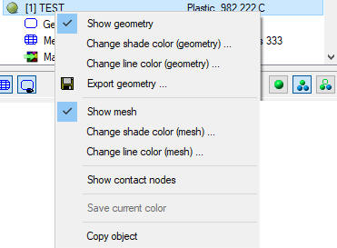
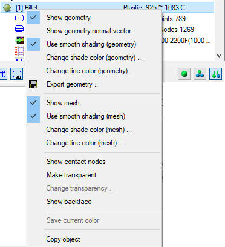
(a) (b)
Operation tree Object RMB options; (a) For 2D (b) For 3D
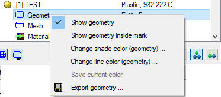
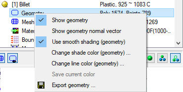
Operation tree Geometry RMB options; (a) For 2D (b) For 3D
As the project is being constructed most of the information is specified in the Property Editor (See Fig. 6.1.1.) like Geometry, Mesh , Boundary conditions,
Material, Simulation control etc. By clicking  in the window, it allows user to traverse the project list in order. Each window will have an effect on how the simulation performs so, care
must be taken on each window. For detail information on editing varies properties of an object and operation setup, please refer Basic forming operation setup.
in the window, it allows user to traverse the project list in order. Each window will have an effect on how the simulation performs so, care
must be taken on each window. For detail information on editing varies properties of an object and operation setup, please refer Basic forming operation setup.
In Pre mode message tab display the preprocessing setup (data definitions) information related to geometry checking output, mesh generation, mesh checking, Database check and generation messages. (See Fig. 6.1.25.)
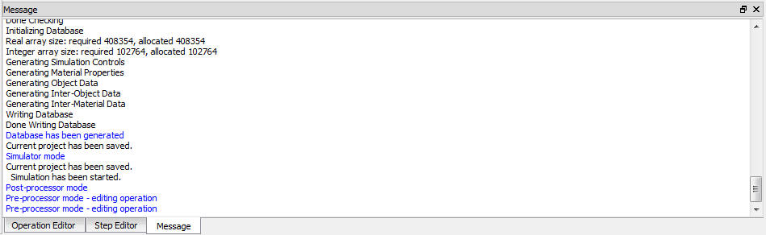
Step editor is used after the simulation of project to modify operation setup from any of the intermediate saved steps and continue the simulation from there on. It displays all saved steps in the database. User can select the step at which operation needs to be edited., database needs to be generated and simulate to reflect the modifications. (See Fig. 6.1.26.)
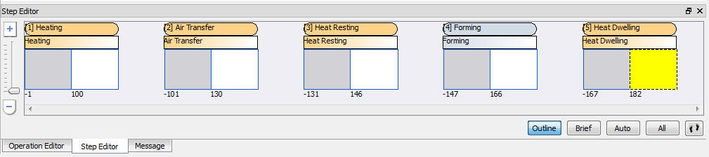
User can use the below listed step selection options for selecting the step easily,
: When selected displays only the first and last step of the operations in the step editor
: When selected displays only first, last and one intermediate saved step of the operations in the step editor.
: When selected displays steps that are selected by system automatically for display in the step list.
 : When selected displays all saved steps of the all operations in the step editor.
: When selected displays all saved steps of the all operations in the step editor.
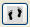
: This will provide more detailed information of all saved steps like SimulationIt provides user defined step selection option in addition to the all above listed step selection options, selecting this will activates few advanced step selection types style and range. (See Fig. 6.1.27.).
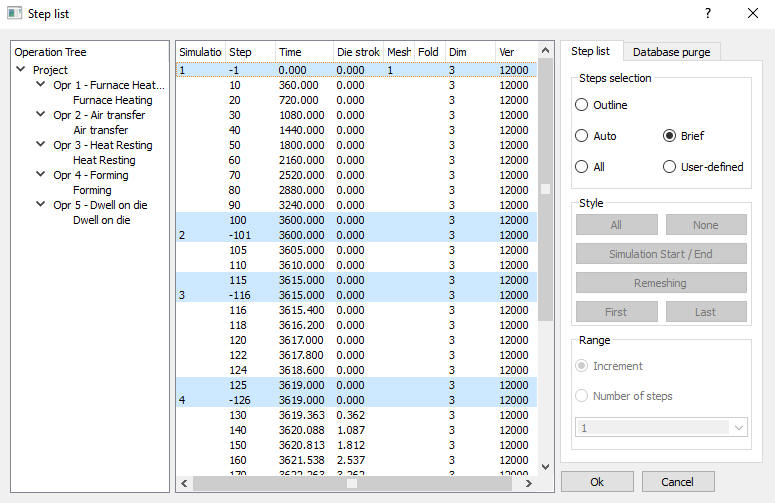
Step List step selection options
Style options:
The selection method for the step list to be displayed in the Post-Processor.
All steps will be selected for use in the Post-Processor.
No steps are selected for use in the Post-Processor.
Selects the starting and the end step of the increment range when no other steps are selected.
Toggle Remeshing will select/deselect the remeshing steps from the step list for use in the Post-Processor.
The starting step for the increment range.
The ending step for the increment range.
Range options:
Huge database can be purged into small one based on the user requirement using Database purge tab. It is necessary that user must select all the negative steps (operation starting steps and remeshing steps), first step and last step of simulation in addition to the important steps to purge. (See Fig. 6.1.28.)
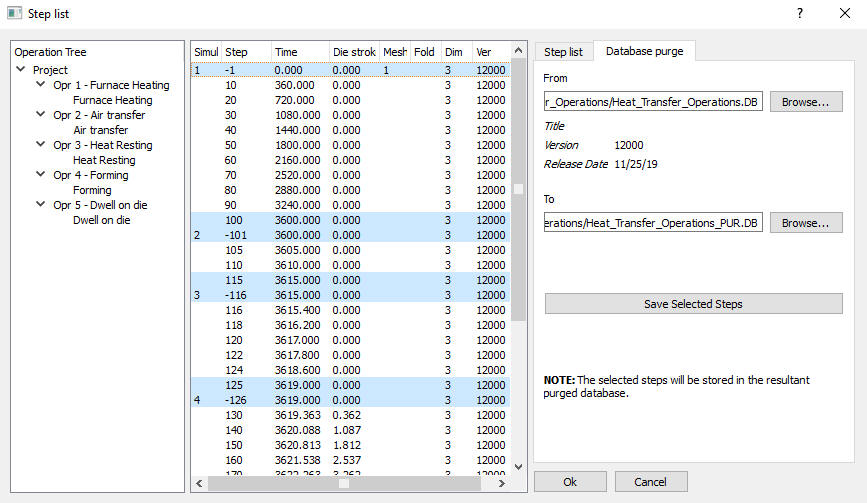
Database purging window
Graphics window displays the graphical representation of the objects. It can be used for displaying the geometry and mesh information of the simulation objects in pre mode. (See Fig. 6.1.1.)
Graphics window RMB options: Right mouse click in pre mode graphics window will provide options as shown in Fig. 6.1.29.
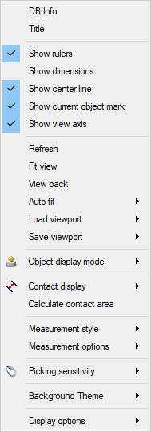
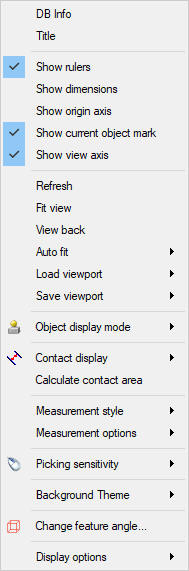
(a) (b)
Right mouse button graphics window options; (a) For 2D (b) For 3D
DB Info: It display the name of the database at the top left corner in the graphics window.
Title: It display the current operation name at the top left corner in the graphics window.
Show Ruler: Using this user can turn on/off the ruler display in the display window.
Show Dimensions : Display the maximum dimensions of the object in X and Y directions in 2D and in X, Y and Z directions in 3D.
Show Center line [2D]: It display the center axis line for Axisymmetric or Torsion geometry type in the graphics window.
Show Origin Axis [3D]: Using this user can turn on/off the origin axis display in the display window.
Show current object mark: This shows the mark in graphics display at the top and bottom corners for the selected objects from object tree. This will be more helpful in multiple object mode display when there are many objects in a setup. (See Fig. 6.1.21.)
Show Current Object mark: This shows the mark at the top and bottom plane four corners of the 3D object and top and bottom plane two corners of the 2D object in multiple and user object modes indicating that object is the current selected object in the object tree, so for that object user can define the data from the data definition window and also help while positing the objects by showing these marks for the selected positioning object.
Show View Axis: It display the 2D or 3D axis at right bottom corner in the graphics window as shown in Fig. 6.1.30.
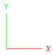
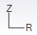
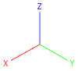
(a) (b) (b)
Axis display in graphics window; (a) For 2D Plane strain and plane stress (b) For 2D Axisymmetric and Torsion mode (c) For 3D
Refresh: Refreshes the Graphical Display Area.
Fit View: Fits all displayed objects or graphs inside the current View port.
View Back: Resets objects to the previously viewed display position.
Auto fit : This option is used to automatically fit the view of the object (s) as per the selection.
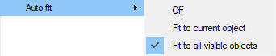
Load and Save Viewport: The user can move or change the views of the geometries by using display tools such as pan, dynamic zoom and box zoom in the display window. These views can be saved using save option (See Fig. 6.1.32a)
provided under viewport tab. If the view is saved as a local viewport, this view gets saved for the current working project only and can be viewed using load option as shown in Fig. 6.1.32b.
If the view is saved as a global viewport the set views are available for any database or a key file, for global viewports to get activated for the projects, the user has to exit from current project.
The user can copy global viewports as a local viewports under load option and local viewports to global viewports under save option.
(a) (b)
Load and Save viewport options; (a) Lod viewport (b) Save viewport
Object display mode: Using this user can control the object display in graphics window, there are three types of object display modes, those are single Multi and user defined object display modes. Refer to Object display mode explanation under Operation Tree for more details.
Contact display: Using this user can turn on/off the inter-object contact nodes display. (See Fig. 6.1.33.)
Contact display turn on/off options
Calculate Contact Area : Shows the contact objects contact area information.
Measurement style: This option gets activate only when  icon (Measurement tool) is selected. Using this tool user can measure the distance between two points in the
linear (X,Y or Z direction) and angular directions (XYZ direction) in CAD style. (See Fig. 6.1.34.)
icon (Measurement tool) is selected. Using this tool user can measure the distance between two points in the
linear (X,Y or Z direction) and angular directions (XYZ direction) in CAD style. (See Fig. 6.1.34.)
(a) (b)
Right mouse button measurement style options; (a) For 2D (b) For 3D
Measurement options: Measure option available are clear, to clear last , Change color text , change Line color and Background color options as show in Fig. 6.1.35.
Right mouse button measurement options
Picking Sensitivity: Using this user can select the sensitivity of picking the nodes and elements of the object and points on the object or anywhere in the display window. There are five levels of sensitivities Super fine Fine, Normal,
Coarse and Rough (See Fig. 6.1.36.). If user wants to pick precisely then Fine picking is preferred otherwise default Normal picking is enough.
If the user wants to select the nodes or elements near the picking point on the object then Coarse picking is preferred.
Picking Sensitivity option
Background Theme: Using this option user can select the different background themes available like Navy blue, White, Black and Gray for the graphics window as shown in Fig. 6.1.37.
Right mouse button background themes options
Display Options: Using this option (See Fig. 6.1.38.) user can select the point or polygon type display of the selected contact node. Also can select point size under Point size list.
Right mouse button selected nodes display options
After turning on the contact display user can select point or polygon type display option, 2d example with point and polygon contact node display is shown in Fig. 6.1.39.
2D Point and polygon contact nodes display example
Feature Angle (3D): User can use this option to change the range of selection when selecting the elements/nodes/polygons for adding BCC or editing geometry etc using surface patch method. It displays the surface patch by treating surfaces within the feature angle as the one surface. A curved surface with smaller feature angle means fewer surface polygons will be picked at a time. For more information refer 8. Pre-processor Feature Angle
Tool bar options has been explained in section 6.4.4. Tool bar options, hence please refer that section for more details.
Related Topics:
Expert mode Simulation Controls settings
Boundary condition definitions